幸福地蔵、岩谷山/新潟県小木町
佐渡の南端、小木は北前船の寄港地として江戸時代には物凄く栄えた港町だったそうだ。
そのかつての栄華を彷佛とさせる宿根木の街の近くを走っているとこんなナイスな光景が。
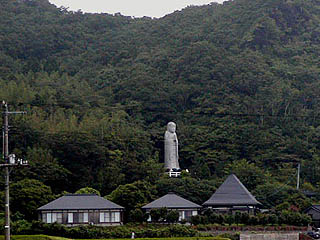
ありゃま〜。大仏ならぬ大地蔵。
手前の建物（民宿）と比べても相当大きな地蔵さんだということは一目瞭然。これは寄らねば。
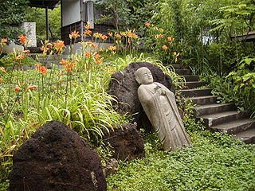
ここの巨大地蔵さんは幸福地蔵というそうだ。
私が訪れた時は誰も人がおらず、説明板のようなものもなかったので、この大地蔵が何時、誰が、どのように建立されたのかが全く判らなかった。
少なくとも10年位は経っている風ではあった。
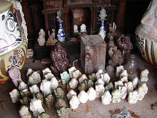 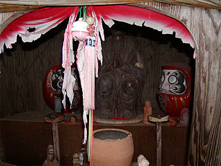
山門をくぐると寺務所らしき建物があったが誰も人はおらず。中に大地蔵と同じ形の地蔵像が安置されていた。
また、何故か巨大な樽があり、その中にはこんな感じでミニ祭壇がつくられていた。
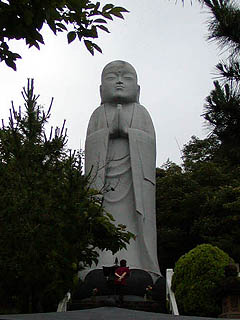 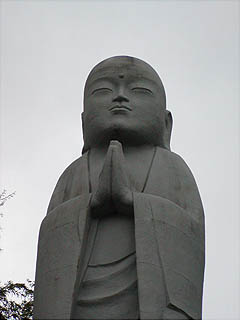
で、大地蔵さんである。
高さは17.5メートル。コンクリート製だ。
この大きさなら何とか中に入れそうな期待もあったのだが、残念ながらお腹の中はびっしりコンクリートで埋まっているみたいでした。
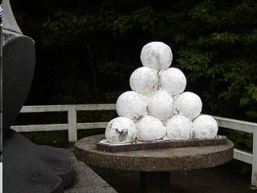 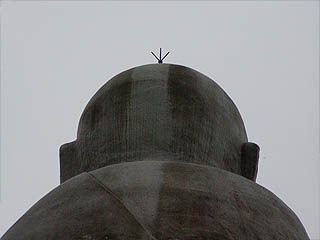
お供えのコンクリ団子もビッグサイズ。後ろから見上げるとオバQみたいな避雷針が付いてました。
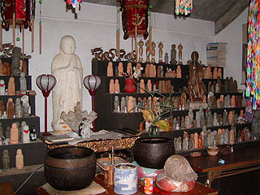
大地蔵さんの背後には地蔵堂があり、様々なお地蔵さんが並んでいた。中央にある白い地蔵さんは巨大地蔵の原形だろう。
ここも梨の木地蔵のように身替わり地蔵システムを採用しているのだろうか？
ところで気になることが一つ。
この小木はダイビングのポイントとしても有名らしいのだが、その海の底にやはり幸福地蔵というお地蔵さんがいるらしいのだ。
真相は潜った訳ではないのでナンとも言えないが、ダイビング関係のウェブなどを見ていると結構頻繁に出てくるので嘘ではなさそうだ。
はたしてココの幸福地蔵と関係があるのかどうかは不明だが、もしかしたらチェーン展開しているのかも知れない。
それにしてもダイビングで水深23メートルのお地蔵さんにお参りするってカッコ良過ぎませんか？
一説によると水中での安全祈願だそうで。
一方、幸福地蔵のすぐ近くには岩谷山という洞窟霊場がある。
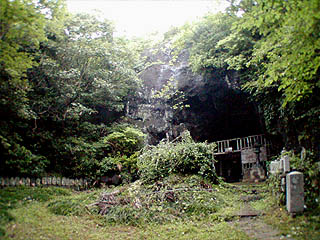 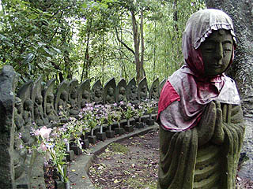
山腹に開いた間口10メートル、高さ6メートル程の洞窟は丁度賽の河原と同じ位の規模のものだった。
洞窟の前の広場を囲むように半円形に四国八十八ケ所の写し本尊が並んでいる。
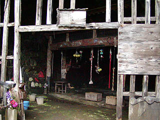 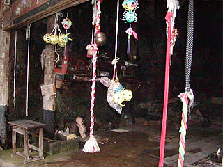
洞窟の入口には2重に門のようなものが作られておりそこから鈴やヒモがぶら下がっているのが印象的だった。
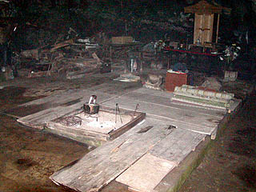
中に入ると中央には囲炉裏がきってある。密教系の修行場のような感じだ。
さらに洞窟は奥まで続くが奥の方は良く見えませんでした・・・
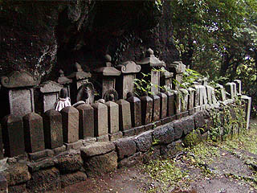 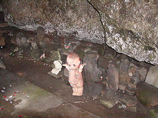
洞窟の壁面には様々な石碑や石像が並んでいる。なぜにキューピーちゃんが・・・
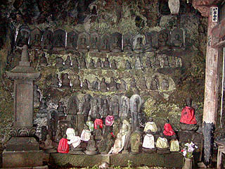 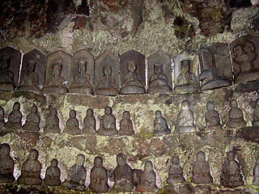
圧巻なのが壁面に雛壇上に並べられた石像群。一階は地蔵、二階は観音、三階四階は弘法大師、そして最上階は十王像となっている。
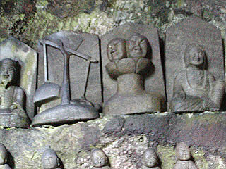
十王像の中には生前の罪を計る業の秤や人頭杖なども。
業の秤は片方に人が縛られており、罪の重さを測定するというもの、人頭杖も判定装置のひとつで、二つの顔があり念怒相の口から火を吹いたら重罪、穏和相の口から白蓮華が出てくれば軽いという。どっちがどっちだか判らないけど良い表情ですね。
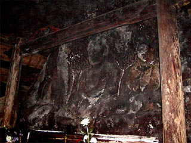
こちらは比較的大きな磨崖仏。全部で8体ある。弘法大師作といわれている。
その後訪れた小木町の民俗博物館にお籠りの写真があった。
お籠りは毎月1,17日に行われるそうだ。
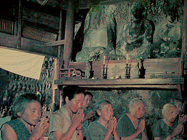
それにしても不思議なのは点対称のような形をした佐渡ヶ島のほぼ南端と北端に同じような規模の洞窟霊場があるという事だ。
伝説によるとここの洞窟は外海府の岩屋口（賽の河原の事か？）まで通じているそうだ。
何かこの島全体の磁場が二つの洞窟によって創られているような気がした。
この佐渡を覆っている濃密な空気はここから来ているのかも知れない。
2003.7.
珍寺大道場 HOME